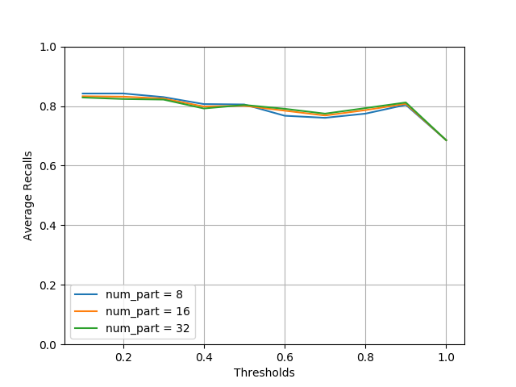
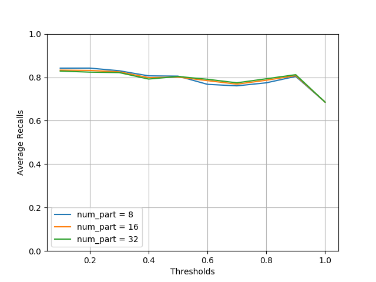

MinHash LSH Ensemble
Containment
Jaccard similarity is great for measuring resemblance between two sets, however, it can be a biased measure for set intersection. This issue can be illustrated in the following Venn diagrams. The left pair (Q and X) have roughly the same intersection size as the right pair (Q’ and X’). But the Jaccard similarities, computed as \(\frac{|Q \cap X|}{|Q \cup X|}\) and \(\frac{|Q' \cap X'|}{|Q' \cup X'|}\) respectively, are very different, with the latter being much smaller, because its union size \(|Q' \cup X'|\) is much larger. This shows that Jaccard similarity is biased when measuring intersection size, as large sets are penalized.

We can use a better measure for intersection, called containment. It is computed as the intersection size divided by the size of one of the set, in this case Q.
It soon becomes clear why we use Q in the denominator, when you think about this search problem: suppose you have a large collection of sets, given a query, which is also a set, you want to find sets in your collection that have intersection with the query above a certain threshold. We can think of the query as set Q, and an arbitrary set in the collection as X. Since the query set here is fixed (for a specific search problem), the denominator \(|Q|\) is a constant, and the intersection size is solely determined by the containment. Thus, we can search for sets in the collection with containment above a certain threshold instead, and the containment threshold can be easily deduced from the intersection threshold by multiplying \(|Q|\).
Another way to think about containment: it is a “normalized” intersection (with value between 0 and 1), which measures the fraction of the query set Q contained in X.
LSH for Containment
Similar to MinHash LSH, there is an LSH index for containment search –
given a query set, find sets with containment above a certain threshold.
It is LSH Ensemble by E. Zhu et al.
This package implements a slightly simplified version of the index,
datasketch.MinHashLSHEnsemble.
The full implementation is in Go. It can be found at
github.com/ekzhu/lshensemble.
Just like MinHash LSH, LSH Ensemble also works directly with MinHash data sketches.
from datasketch import MinHashLSHEnsemble, MinHash
set1 = set(["cat", "dog", "fish", "cow"])
set2 = set(["cat", "dog", "fish", "cow", "pig", "elephant", "lion", "tiger",
"wolf", "bird", "human"])
set3 = set(["cat", "dog", "car", "van", "train", "plane", "ship", "submarine",
"rocket", "bike", "scooter", "motorcyle", "SUV", "jet", "horse"])
# Create MinHash objects
m1 = MinHash(num_perm=128)
m2 = MinHash(num_perm=128)
m3 = MinHash(num_perm=128)
for d in set1:
m1.update(d.encode('utf8'))
for d in set2:
m2.update(d.encode('utf8'))
for d in set3:
m3.update(d.encode('utf8'))
# Create an LSH Ensemble index with threshold and number of partition
# settings.
lshensemble = MinHashLSHEnsemble(threshold=0.8, num_perm=128,
num_part=32)
# Index takes an iterable of (key, minhash, size)
lshensemble.index([("m2", m2, len(set2)), ("m3", m3, len(set3))])
# Check for membership using the key
print("m2" in lshensemble)
print("m3" in lshensemble)
# Using m1 as the query, get an result iterator
print("Sets with containment > 0.8:")
for key in lshensemble.query(m1, len(set1)):
print(key)
The precision of LSH Ensemble increases with the number of partitions,
so does the querying time, as the plot below shows.
The experiment code can be found in the benchmark directory
of the source code repository.
There are other optional parameters that can be used to tune the index to achieve better accuracy or performance.
See the documentation of datasketch.MinHashLSHEnsemble for details.
 

{kind=link}